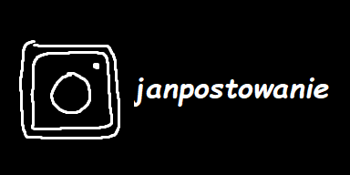
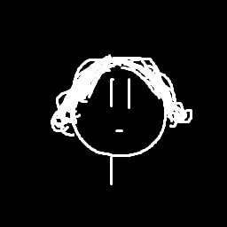

BAGNO
BAGNO
oficjalna strona internetowa Jana Tryki
znajdziesz tu jego KONTENT


kanał na jutubie z muzyką: serio nie chcesz tego słuchać, niech kolor tego linku cię nie kusi
gra, którą robiłem na zajęcia z js: działa tylko na PC
pej na fb (feat. wyder): Dopisuję nazwy miast do losowych obrazków
świstówka roztocka: świstówka roztocka
sekretny kontent: wszystkie moje sekrety
artyzm